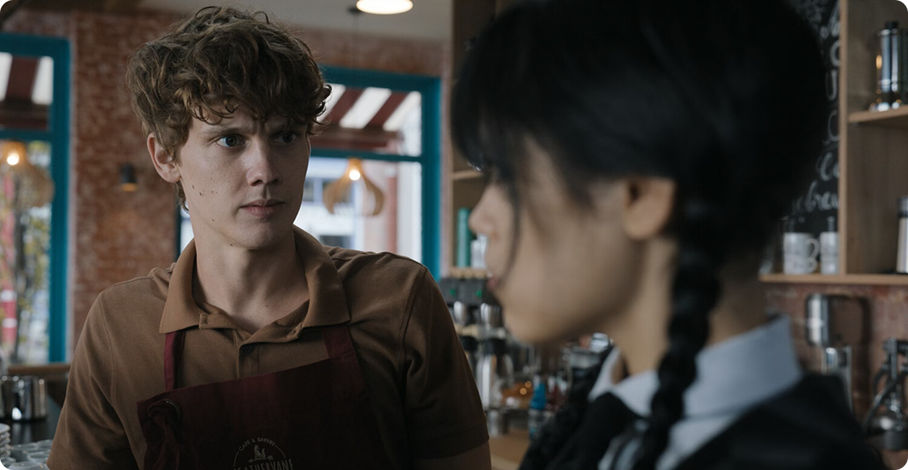
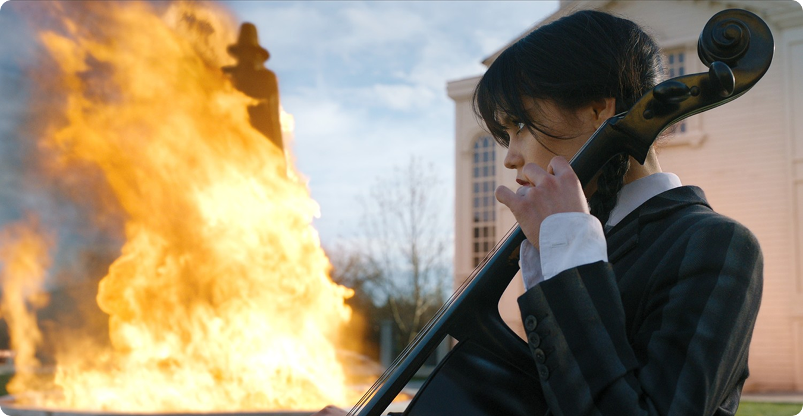
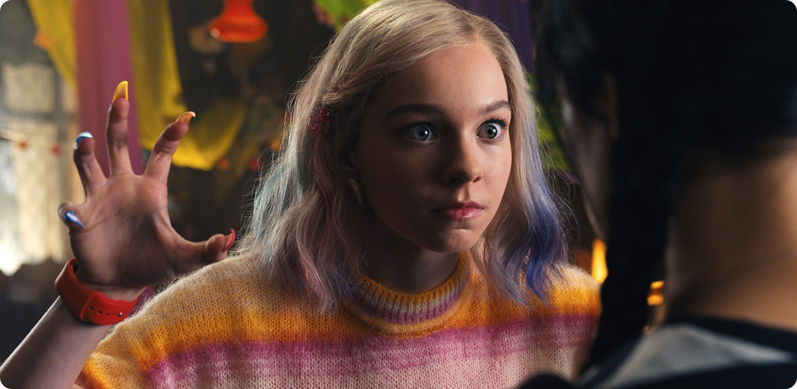
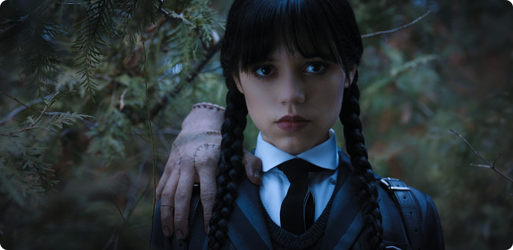

Отказ соответствовать ожиданиям
Главная особенность Уэнсдей — отсутствие стремления нравиться. В контексте подросткового жанра это почти нарушение правил: обычно герой проходит путь адаптации и принятия, здесь же происходит обратное. Уэнсдей не считает, что должна меняться ради комфорта окружающих.
Она не смягчает речь, не имитирует эмоции и не подстраивается под социальные нормы. При этом важно, что сериал не показывает её поведение как ошибку. Это не недостаток, который нужно «исправить», а осознанный выбор персонажа. Уэнсдей не «не умеет быть нормальной» — она не принимает саму идею обязательной нормальности.

Нормальность как форма контроля
Общество в сериале устроено так, что даже в пространстве «других» действуют строгие рамки. От человека ожидают правильного поведения, правильной эмоциональности и предсказуемых реакций. Это не прямая агрессия, а мягкое давление через ожидания, правила и социальные роли.
Уэнсдей сопротивляется именно этому. Её инаковость становится способом сохранить автономию. Она отказывается растворяться в коллективе, потому что понимает, что вместе с этим можно потерять собственную идентичность. Нормальность в данном контексте — это не объективное состояние, а социальный конструкт, который задаёт рамки «приемлемого» поведения.

Вывод
«Уэнсдей» предлагает более точный взгляд на аутсайдерство. Он не романтизирует изоляцию, но и не считает её проблемой, которую нужно обязательно устранить. Сериал показывает, что непохожесть может быть не отклонением, а формой честного существования.

Героиня сталкивается с тем, что независимость имеет цену. Сохранить себя, значит частично ограничить близость. И именно в этом проявляется сложность её позиции: она сильна, но не полностью защищена от последствий своего выбора. При всей своей жёсткости Уэнсдей не лишена слабостей. Её закрытость осложняет отношения с людьми, а стремление к контролю делает её эмоционально недоступной. Это важно: сериал не превращает инаковость в идеал.

В мире, где человека постоянно подталкивают к удобству и предсказуемости, отказ соответствовать становится актом самостоятельности. И именно поэтому образ Уэнсдей работает: он говорит не о том, как стать «как все», а о том, как не потерять себя.